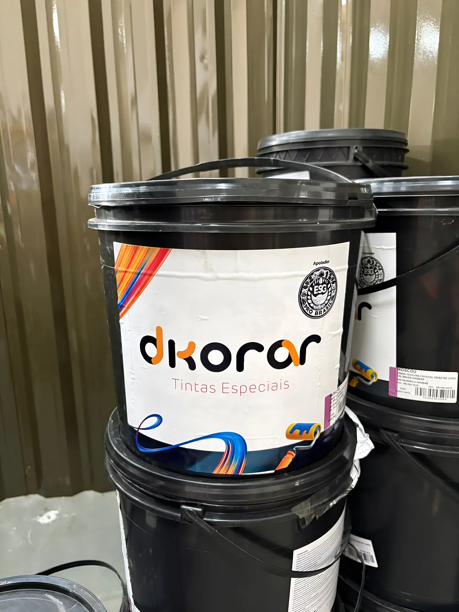
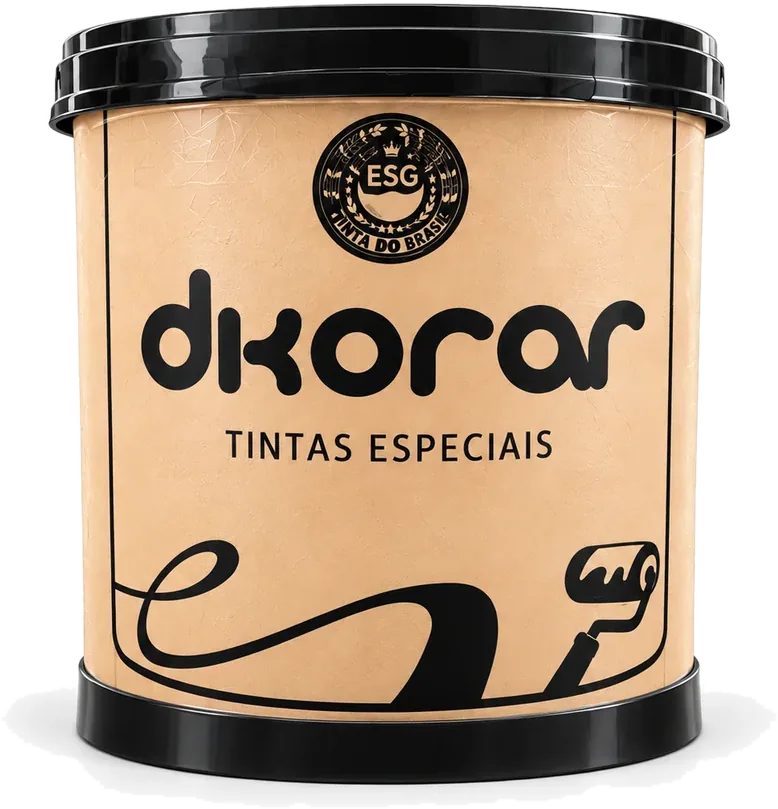
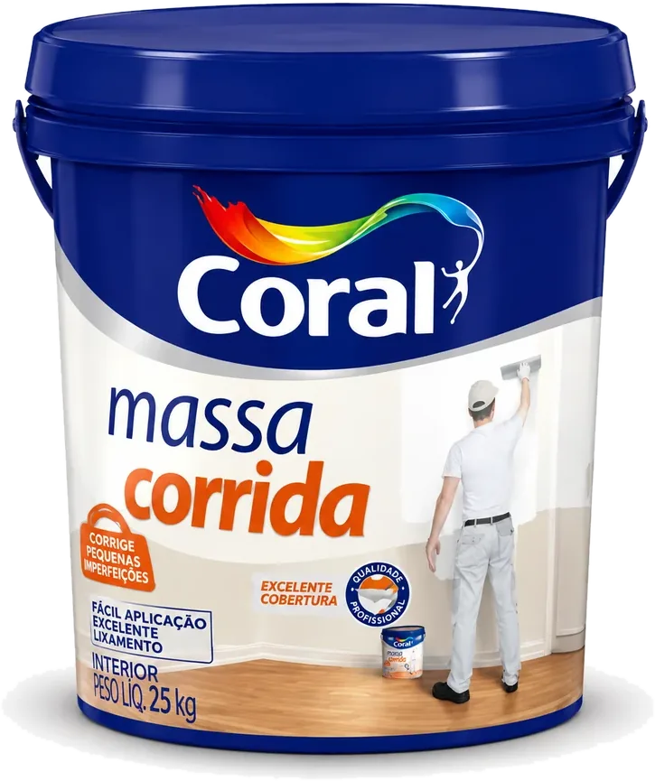
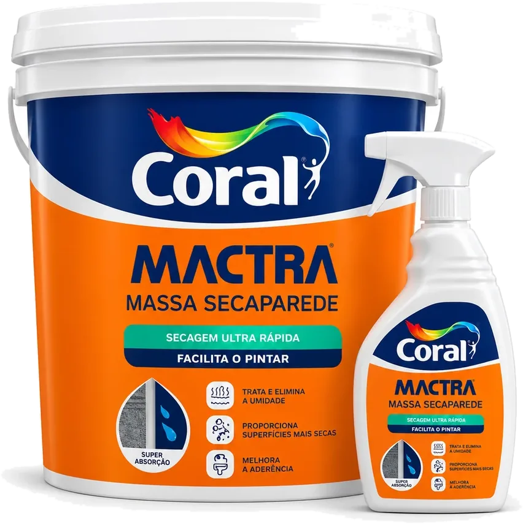
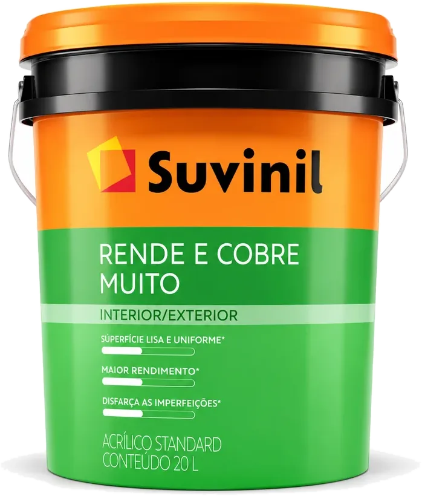
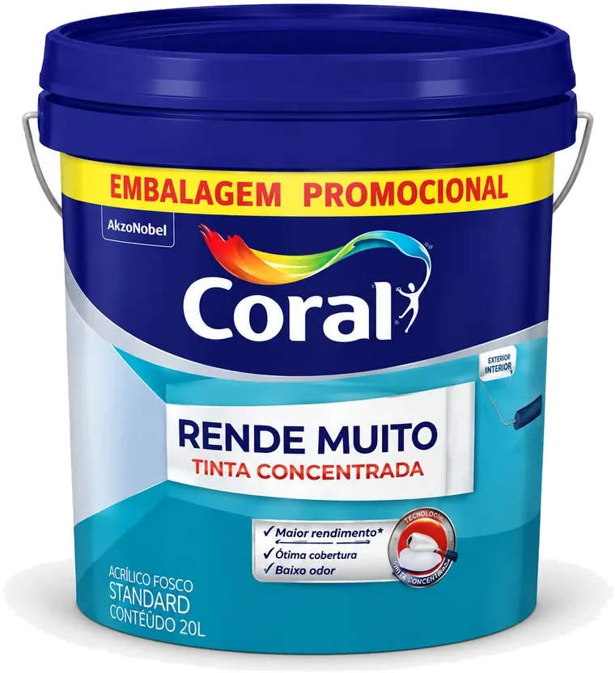
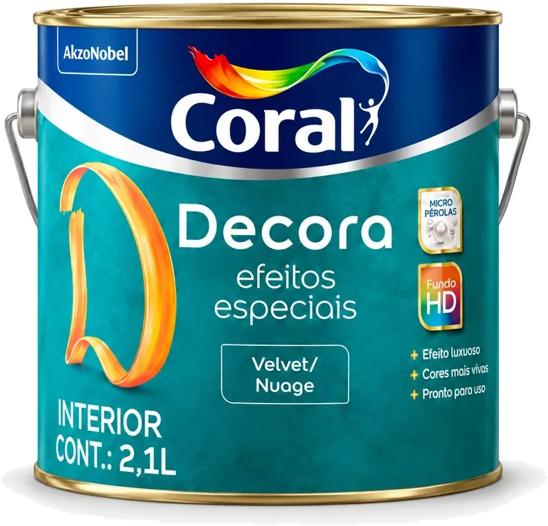
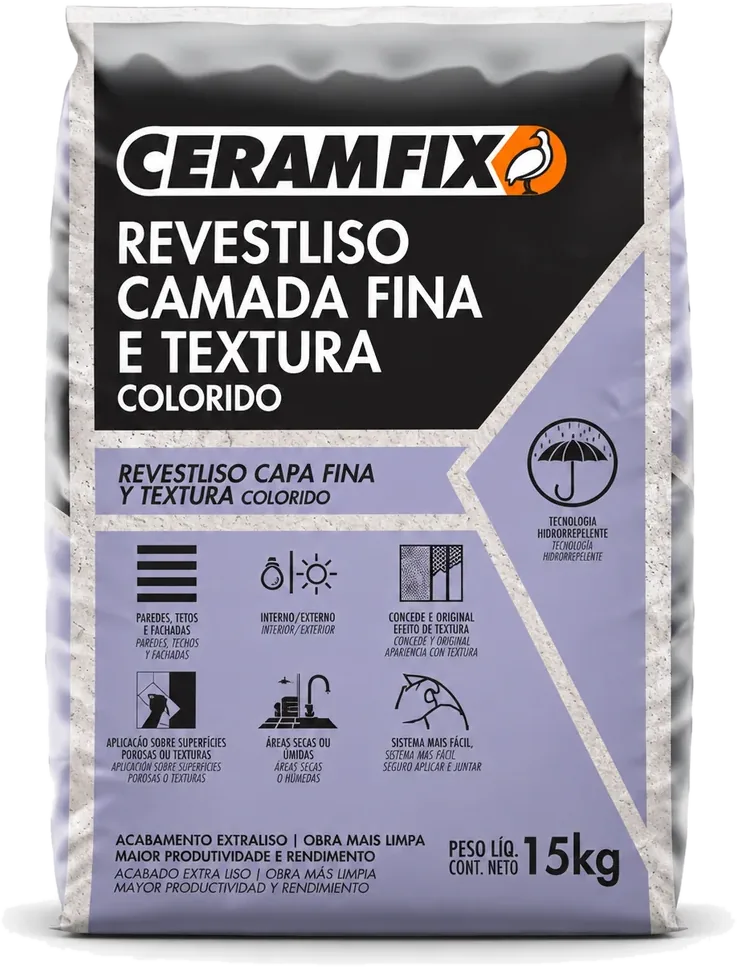
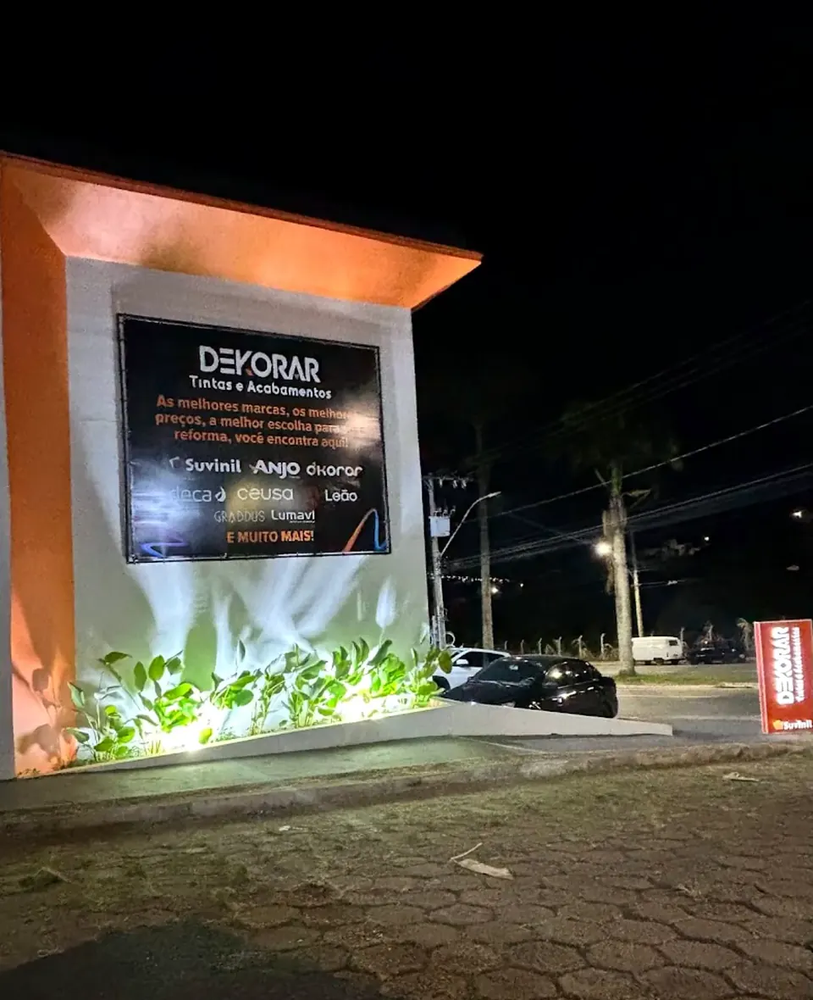

Lavras
Av. Dr. Francisco Martins de Andrade, 91Bairro Ouro Preto, Lavras (MG)
Tintas, texturas, massas e revestimentos para quem reforma ou constrói em Lavras, Três Corações e região. Com a Dkorar, nossa marca própria, e entrega direto na obra.
LavrasAv. Dr. Francisco Martins de Andrade, 91
Bairro Ouro Preto
Três CoraçõesAv. Rei Pelé, 1265
Nossa Senhora Aparecida
Telefones(35) 98433-6650
(35) 2142-4468


A Dkorar Tintas Especiais é a linha própria da Dekorar: tintas, texturas e complementos com qualidade e preço de fábrica. A linha completa está nas lojas de Lavras e Três Corações.
Quatro famílias de produto, da preparação da parede ao acabamento. Peça a cartela de cores e texturas na loja.

Da parede crua ao acabamento, cada fase pede um produto. Na dúvida, a equipe vai até a obra para orientar.
Massa corrida para nivelar e deixar a parede lisa antes da tinta.

Massa Corrida Coral 25 kgUmidade, mofo, bolhas e salitre precisam ser resolvidos antes da pintura.

Coral Mactra Seca ParedeCoral, Suvinil, Anjo e Dkorar para áreas internas e externas. A gente ajuda a calcular quantos galões a obra precisa.

Suvinil Rende e Cobre Muito 20 L
Coral Rende Muito 20 LEfeitos decorativos, texturas e revestimentos para o toque final.

Efeito Velvet Coral 2,1 L
Revestliso Ceramfix 15 kgPrateleiras organizadas por marca e linha, mesas para montar o orçamento com calma e um galpão para separar pedidos grandes.


A caminhonete da Dekorar leva tintas, massas e revestimentos para casas e canteiros em Lavras, Três Corações e cidades próximas. Consulte área, prazo e disponibilidade.
E muito mais. A disponibilidade de cada linha muda; confirme com a equipe.
Coral, Suvinil, Anjo, Dkorar, Ceramfix, Deca, Ceusa, Leão e Lumavi
Marque o que a obra precisa. A mensagem segue pronta para o WhatsApp da loja.

WhatsApp (35) 98433-6650, telefone (35) 2142-4468. Para horários, confirme pelo WhatsApp.